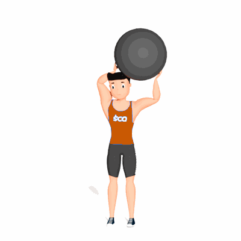

Flexão Alternada de Ombro e Cotovelo com Bola Suíça

Exercício para fortalecimento e mobilidade dos ombros e braços.
Ficha Técnica
Tipo: Funcional
Grupo Muscular: Ombro
Aparelho: Nenhum
Músculos: Nenhum
Como realizar
- Segure a bola acima da cabeça com os braços estendidos;
- Inicie o movimento levando a bola para a direita da sua cabeça flexionando o ombro e cotovelo;
- Retorne a bola a posição inicial;
- Agora leve a bola para a esquerda da sua cabeça também flexionando o ombro e cotovelo;
- Retorne a posição inicial e repita os movimentos alternando os lados.
 RC STORE
RC STORE